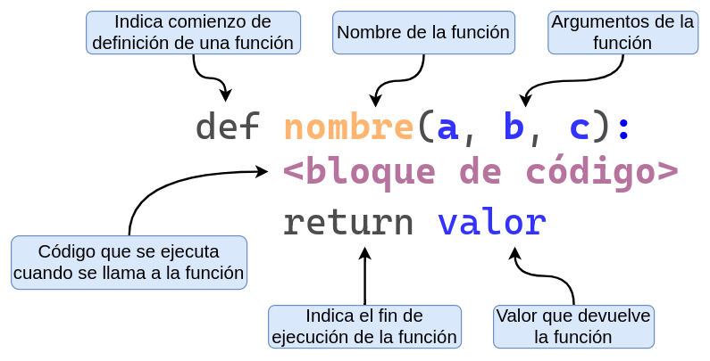
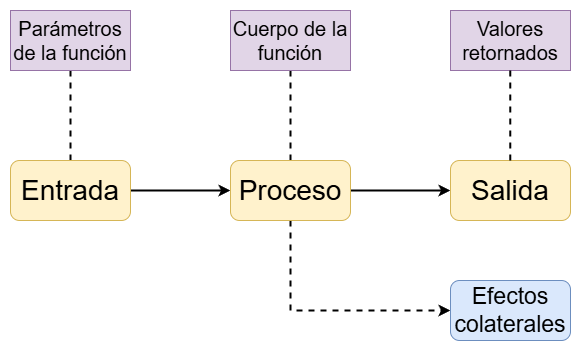

precio_base = 800 # Precio del producto ($800)
impuesto = 0.21 # Impuesto (21%)
descuento = 0.10 # Descuento (10%)
precio_final = precio_base * (1 + impuesto) * (1 - descuento)
precio_final871.2Una función puede pensarse como un “mini-programa” dentro de un programa más grande. Su propósito es cumplir una tarea u objetivo específico, de forma independiente del resto del código.
El uso de funciones tiene varias ventajas:
Consideremos el siguiente caso donde se busca calcuar el precio final de un producto, considerando impuestos y descuentos.
precio_base = 800 # Precio del producto ($800)
impuesto = 0.21 # Impuesto (21%)
descuento = 0.10 # Descuento (10%)
precio_final = precio_base * (1 + impuesto) * (1 - descuento)
precio_final871.2¿Qué pasa si queremos calcular el precio final para otros productos con diferentes precios, impuestos o descuentos?
Una opción es repetir el código tantas veces como sea necesario…
precio_base = 500 # Precio del producto ($500)
impuesto = 0.105 # Impuesto (10.5%)
descuento = 0.0 # Descuento (0%)
precio_final = precio_base * (1 + impuesto) * (1 - descuento)
precio_final552.5precio_base = 2000 # Precio del producto ($2000)
impuesto = 0.21 # Impuesto (21%)
descuento = 0.20 # Descuento (20%)
precio_final = precio_base * (1 + impuesto) * (1 - descuento)
precio_final1936.0Otra opción, mucho mas conveniente, es utilizar funciones.
Luego, para utilizar la función simplemente la llamamos (o invocamos).
También es posible indicar los valores de los argumentos utilizando sus nombres.
Analicemos las diferentes partes que forman la definición de una función en Python:

def:
:):
return que indica el resultado que devuelve la función.
return viene el valor o nombre de la variable a devolver.Comencemos con una función super sencilla. La misma se llama sumar, recibe dos argumentos x e y, y devuelve la suma de ambos.
El valor que devuelve puede ser tratado como cualquier valor en Python. Por ejemplo, se lo puede asignar a una variable.
Y el valor de esa variable puede ser luego pasado a una nueva llamada a sumar() (o a cualquier otra función).
Incluso es posible pasar expresiones y llamadas a funciones a la hora de pasar un argumento:
En la línea sumar(sumar(1, 2), 3), Python comienza evaluando la función sumar(). Pero para poder hacerlo, primero necesita conocer los valores de los argumentos. Al revisar el primer argumento, detecta que no es un valor directamente, sino otra llamada a la función sumar(1, 2), por lo que la evalúa primero. El resultado de esa operación es 3, que se toma como valor del primer argumento de la llamada externa. El segundo argumento ya está dado: también es 3. Entonces, Python invoca la función sumar() con los argumentos 3 y 3, cuyo resultado es 6. Finalmente, ese valor se muestra en pantalla.
Otro ejemplo sencillo consiste en una función que recibe un nombre e imprime un saludo en pantalla.
Esta función no devuelve un resultado, sino que utiliza el argumento recibido para mostrar un mensaje en pantalla.
Y podemos tener funciones que no utilicen ningún argumento.
En Python, las funciones pueden devolver múltiples valores separándolos por comas en la sentencia return. Por ejemplo:
El resultado de este tipo de funciones puede ser asignado a múltiples variables. De esta forma, podemos obtener el cuadrado y el cubo de un número con una sola llamada a una función.
Al igual que en la asignación múltiple de variables, lo que parece ser una función que devuelve múltiples objetos es en realidad una función que devuelve un único objeto llamado tupla (de tipo tuple) que permite la técnica de unpacking.
No te preocupes, más adelante vamos a ver bien cómo funciona.

Algunos efectos colaterales pueden ser:
Una función en Python puede realizar múltiples tareas, como devolver un valor e imprimir un mensaje en pantalla.
Por ejemplo:
La función producto() no solo calcula y devuelve el resultado de multiplicar x por y, sino que además muestra un mensaje por pantalla.
Sin embargo, en general no es una buena práctica combinar tareas distintas dentro de una misma función, especialmente si son de distinta naturaleza (como devolver un valor y causar un efecto colateral). Esto puede dificultar la reutilización y el mantenimiento del código.
Al definir una función, debemos darle un nombre a cada uno de los argumentos que va a recibir.
Al llamar a la función, podemos pasar los valores de dos formas: por posición o por nombre.
Por ejemplo, las siguientes llamadas a la función sumar() son equivalentes:
Si utilizamos los nombres para pasar los argumentos no hace falta que estén en el mismo orden que en la definición de la función.
¡Que sea posible no significa que sea una buena práctica!
returnLa función sumar() termina con la siguiente línea:
Es decir, utiliza la sentencia return para devolver un valor.
Por otro lado, la función saludar() termina con un print() y no tiene ningún return.
saludo?En Python no existe el concepto de return implícito.
Si queremos que una función devuelva un valor, es necesario usar la instrucción return de forma explícita.
En caso de no hacerlo, la función devuelve automáticamente None.
Cuando definimos una función podemos determinar valores por defecto para uno o más parámetros.
Si cuando llamamos a la función le pasamos un valor a ese parámetro, se utiliza el valor que pasamos. Sino, se usa el valor por defecto.
Esta práctica es útil para simplificar las llamadas que realizamos a una función.
Supongamos la siguiente función describir_mascota() que tiene los parámetros nombre y tipo
def describir_mascota(nombre, tipo):
print("Tengo un", tipo)
print("Y su nombre es", nombre)
describir_mascota("Bruno", "perro")Tengo un perro
Y su nombre es BrunoAhora, hacemos que el parámetro nombre sea por defecto igual a "perro".
De este modo, es posible llamar a la función solamente pasando valores para aquellos parámetros sin valor por defecto:
Como es de esperar, también es posible pasar valores distintos a los establecidos por defecto: